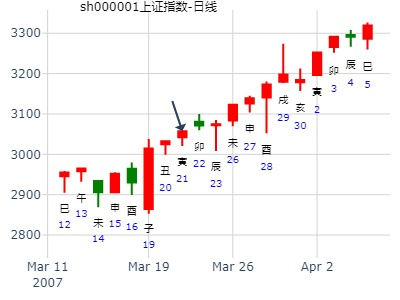
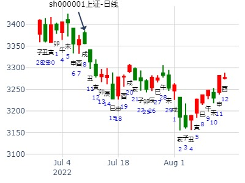
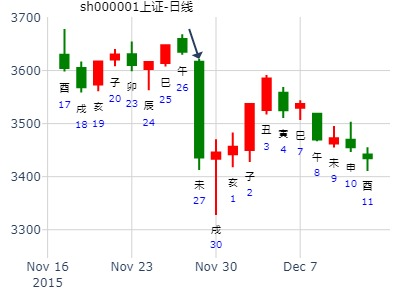
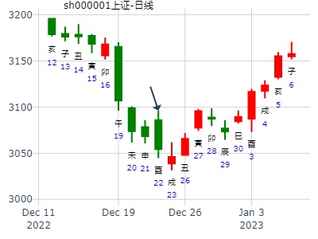

例322、
巳月戊申日，占买台连纸有利否？得复之颐卦。
子孙酉金″ 动 官鬼寅木
妻财亥水″
兄弟丑土″ 应
兄弟辰土″
官鬼寅木″
妻财子水′ 世
断曰：子水财爻持世，日辰生之，酉金动而生之，但嫌金水逢于夏令，元神用神俱值休囚，秋冬必长，有纸多收。
果于堆时每块九钱，后卖至三两六七。
此乃财值休囚，出脱于生旺之时也。
2011年 1月 27日 15时 0分 (起卦方式：手动指定)
干支：庚寅年 己丑月 壬午日 戊申时 日空亡：申酉
神煞：驿马－申 桃花－卯 日禄－亥 贵人－卯，巳
坤宫：地雷复 (六合) 巽宫：山雷颐 (游魂)
六神 伏神 本 卦 变 卦
白虎 子孙酉金 ▅▅ ▅▅ ╳→ 官鬼寅木 ▅▅▅▅▅
螣蛇 妻财亥水 ▅▅ ▅▅ 妻财子水 ▅▅ ▅▅
勾陈 兄弟丑土 ▅▅ ▅▅ 应 兄弟戌土 ▅▅ ▅▅ 世
朱雀 兄弟辰土 ▅▅ ▅▅ 兄弟辰土 ▅▅ ▅▅
青龙 父母巳火 官鬼寅木 ▅▅ ▅▅ 官鬼寅木 ▅▅ ▅▅
玄武 妻财子水 ▅▅▅▅▅ 世 妻财子水 ▅▅▅▅▅ 应
老怪鬼谈：一，六合化六冲，大象不吉
二，动爻子孙酉金化官鬼，本也不错，奈何子孙空亡，日建相克，化绝寅木，子孙之力道减弱不少，弱势走法形态，并逐步趋向盘整，带反弹。
三，早盘开局，子水妻财高开之象，月建兄弟克合，日建父母冲合冲动，高开低走的形态走法，二爻的震荡弱反弹，力度一般，先涨而后跌。三爻的辰土，主跌，空爻子孙合，带量下跌，早盘尾盘有反弹，力度偏弱。
四，午盘兄弟丑土，主跌，临月建，日建相生，力度强，五爻妻财主涨，开始有跌，后反弹，然后就是震荡盘整向上，弱涨，后又跌。六爻的空亡，先跌后盘整，尾盘带弱反弹。
五，整天看盘，收阴可能性大，午盘能见最低，有点V字形的形态。
个人意见，只供参考~~~~~~~~~~~~~~~
复之颐，子孙化绝，全年大跌。世爻日破。2011辛卯年中国股市（topfuner）
公历起卦时间：2011年2月8日13时30分 (手工指定)
干支：辛卯年 庚寅月 甲午日 辛未时 （日空：辰巳）
神煞：驿马－申 桃花－卯 日禄－寅 贵人－丑，未
坤宫：地雷复 (六合) 巽宫：山雷颐 (游魂)
六神 伏神 本 卦 变 卦
玄武 子孙癸酉金 ▅▅ ▅▅ ╳→ 官鬼丙寅木 ▅▅▅▅▅
白虎 妻财癸亥水 ▅▅ ▅▅ 妻财丙子水 ▅▅ ▅▅
腾蛇 兄弟癸丑土 ▅▅ ▅▅ 应 兄弟丙戌土 ▅▅ ▅▅ 世
勾陈 兄弟庚辰土 ▅▅ ▅▅ 兄弟庚辰土 ▅▅ ▅▅
朱雀 父母乙巳火 官鬼庚寅木 ▅▅ ▅▅ 官鬼庚寅木 ▅▅ ▅▅
青龙 妻财庚子水 ▅▅▅▅▅ 世 妻财庚子水 ▅▅▅▅▅ 应
马后炮：
1.辰月大跌，应在动则逢合时。酉金动爻逢合时。子化鬼正式生效。
2.亥月冲旬空之巳火暗动，大跌。
1.子孙化官鬼，且子孙月休日克，又化官鬼，弱
2.用神亥水照样月休日弱。
3.复卦六爻辞很惨。上六：迷复，凶，有灾眚。用行师，终有大败，以其国君凶；至于十年，不克征。曰：迷复之凶，反君道也。
4.唯寅月月合亥水，涨了。卯月震荡，辰月自4月15日开始暴跌。
占事：今天大盘走势
公历起卦时间：2007年3月21日9时15分 (在线摇卦)
干支：丁亥年 癸卯月 甲寅日 己巳时 （日空：子丑）
坤宫：地雷复 (六合) 巽宫：山雷颐 (游魂)
六神 伏神 本 卦 变 卦
玄武 子孙癸酉金 ▅▅ ▅▅ ╳→ 官鬼丙寅木 ▅▅▅▅▅
白虎 妻财癸亥水 ▅▅ ▅▅ 妻财丙子水 ▅▅ ▅▅
腾蛇 兄弟癸丑土 ▅▅ ▅▅ 应 兄弟丙戌土 ▅▅ ▅▅ 世
勾陈 兄弟庚辰土 ▅▅ ▅▅ 兄弟庚辰土 ▅▅ ▅▅
朱雀 父母乙巳火 官鬼庚寅木 ▅▅ ▅▅ 官鬼庚寅木 ▅▅ ▅▅
青龙 妻财庚子水 ▅▅▅▅▅ 世 妻财庚子水 ▅▅▅▅▅ 应

子孙弱极，却是涨。
主帖标题: 2020.03第二周上证指数擂台赛第 1局（9日) Z方
数理卦
公历起卦时间：2020年3月9日9时2分 (手工指定)
干支：庚子年 己卯月 辛亥日 癸巳时 （日空：寅卯）
坤宫：地雷复 (六合) 巽宫：山雷颐 (游魂)
六神 伏神 本 卦 变 卦
螣蛇 子孙癸酉金 ▅▅ ▅▅ ╳→ 官鬼丙寅木 ▅▅▅▅▅
勾陈 妻财癸亥水 ▅▅ ▅▅ 妻财丙子水 ▅▅ ▅▅
朱雀 兄弟癸丑土 ▅▅ ▅▅ 应 兄弟丙戌土 ▅▅ ▅▅ 世
青龙 兄弟庚辰土 ▅▅ ▅▅ 兄弟庚辰土 ▅▅ ▅▅
玄武 父母乙巳火 官鬼庚寅木 ▅▅ ▅▅ 官鬼庚寅木 ▅▅ ▅▅
白虎 妻财庚子水 ▅▅▅▅▅ 世 妻财庚子水 ▅▅▅▅▅ 应
上证指数4月21-25日行情预测？[六爻预测][原创]
再人上证指数4月21-25日行情预测？
起卦时间：2014年04月20日09时38分起卦方式：手摇硬币起卦
干支：甲午年 戊辰月 辛酉日 癸巳时
旬空：辰巳 戌亥 子丑 午未
六神 伏神 坤宫：地雷复（六合） 巽宫：山雷颐（游魂）
【本 卦】 【变 卦】
滕蛇 ▅▅ ▅▅ 子孙癸酉金 ×→ ▅▅▅▅▅ 官鬼丙寅木
勾陈 ▅▅ ▅▅ 妻财癸亥水 ▅▅ ▅▅ 妻财丙子水
朱雀 ▅▅ ▅▅ 兄弟癸丑土 应 ▅▅ ▅▅ 兄弟丙戌土 世
青龙 ▅▅ ▅▅ 兄弟庚辰土 ▅▅ ▅▅ 兄弟庚辰土
玄武 父母乙巳火 ▅▅ ▅▅ 官鬼庚寅木 ▅▅ ▅▅ 官鬼庚寅木
白虎 ▅▅▅▅▅ 妻财庚子水 世 ▅▅▅▅▅ 妻财庚子水 应
风生水起 占事：大盘明天。（经典大顶附近出现六爻）
起卦方式：手动摇卦
公历时间：2015年5月25日15时0分
干 支：乙未年 辛巳月 辛丑日 丙申时
旬 空：辰巳 申酉 辰巳 辰巳
坤宫：地雷复（六合） 巽宫：山雷颐（游魂）
六神 伏 神 【本 卦】 【变 卦】
螣蛇 ▄▄ ▄▄ 子孙癸酉金 × ▄▄▄▄▄ 官鬼丙寅木
勾陈 ▄▄ ▄▄ 妻财癸亥水 ▄▄ ▄▄ 妻财丙子水
朱雀 ▄▄ ▄▄ 兄弟癸丑土 应 ▄▄ ▄▄ 兄弟丙戌土 世
青龙 ▄▄ ▄▄ 兄弟庚辰土 ▄▄ ▄▄ 兄弟庚辰土
玄武 父母乙巳火 ▄▄ ▄▄ 官鬼庚寅木 ▄▄ ▄▄ 官鬼庚寅木
白虎 ▄▄▄▄▄ 妻财庚子水 世 ▄▄▄▄▄ 妻财庚子水 应
动而逢合，不一定应在动爻，可以应在整个动变起作用，即子孙化鬼。
求测人：某人，男，壬子(1972年)，手工指定(起卦方式)
占问事宜：今日上证指数走势
公历：2020年5月20日8时19分，星期三。
干支：庚子年 辛巳月 癸亥日 丙辰时 (卦身：子)
主变卦 地雷复(坤宫) 之 山雷颐(巽宫) [空亡:子、丑]
白虎 ▅▅ ▅▅×子孙癸酉金 ▅▅▅▅▅ 官鬼丙寅木
螣蛇 ▅▅ ▅▅ 妻财癸亥水 ▅▅ ▅▅ 妻财丙子水
勾陈 ▅▅ ▅▅ 兄弟癸丑土 应 ▅▅ ▅▅ 兄弟丙戌土 世
朱雀 ▅▅ ▅▅ 兄弟庚辰土 ▅▅ ▅▅ 兄弟庚辰土
青龙 父母乙巳火 ▅▅ ▅▅ 官鬼庚寅木 ▅▅ ▅▅ 官鬼庚寅木
玄武 ▅▅▅▅▅ 妻财庚子水 世 ▅▅▅▅▅ 妻财庚子水 应
月破值日，子孙化鬼。
主帖标题: 5.11上证
公历起卦时间：2021年5月10日21时22分 (手工指定)
干支：辛丑年 癸巳月 戊午日 癸亥时 （日空：子丑）
神煞：驿马－申 桃花－卯 日禄－巳 贵人－丑，未
坤宫：地雷复 (六合) 巽宫：山雷颐 (游魂)
六神 伏神 本 卦 变 卦
朱雀 子孙癸酉金 ▅▅ ▅▅ ╳→ 官鬼丙寅木 ▅▅▅▅▅
青龙 妻财癸亥水 ▅▅ ▅▅ 妻财丙子水 ▅▅ ▅▅
玄武 兄弟癸丑土 ▅▅ ▅▅ 应 兄弟丙戌土 ▅▅ ▅▅ 世
白虎 兄弟庚辰土 ▅▅ ▅▅ 兄弟庚辰土 ▅▅ ▅▅
螣蛇 父母乙巳火 官鬼庚寅木 ▅▅ ▅▅ 官鬼庚寅木 ▅▅ ▅▅
勾陈 妻财庚子水 ▅▅▅▅▅ 世 妻财庚子水 ▅▅▅▅▅ 应
六爻：子孙动化官鬼
综合：明日未日冲丑出空助子孙，上涨的卦象。复，一阳初生，故震在地底，反复用功。
板块仍是化学、金属、煤炭。。。
乾坤自在 性别：男 占事：000540
公历起卦时间：2013年6月3日5时47分 (报双数起卦)
干支：癸巳年 丁巳月 庚子日 己卯时 （日空：辰巳）
坤宫：地雷复 (六合) 巽宫：山雷颐 (游魂)
六神 伏神 本 卦 变 卦
腾蛇 子孙癸酉金 ▅▅ ▅▅ ╳→ 官鬼丙寅木 ▅▅▅▅▅
勾陈 妻财癸亥水 ▅▅ ▅▅ 妻财丙子水 ▅▅ ▅▅
朱雀 兄弟癸丑土 ▅▅ ▅▅ 应 兄弟丙戌土 ▅▅ ▅▅ 世
青龙 兄弟庚辰土 ▅▅ ▅▅ 兄弟庚辰土 ▅▅ ▅▅
玄武 父母乙巳火 官鬼庚寅木 ▅▅ ▅▅ 官鬼庚寅木 ▅▅ ▅▅
白虎 妻财庚子水 ▅▅▅▅▅ 世 妻财庚子水 ▅▅▅▅▅ 应
主帖标题: 梅花小孩：6月15日-19日大盘的走势 2919.74
周日我的新浪微博出的诸葛骰子卦，因为卦意比较明显，我就不卖弄了
供与我有缘的道友对照学习吧
主题：6月15日-19日大盘的走势 2919.74
庚子 壬午 戊子 丁巳 (午未空) 庚子年四月廿三(2020/06/14 10:19:18)
地雷复 山雷颐
朱雀 子孙酉金 × 官鬼寅木 ／
青龙 妻财亥水 ∥ 妻财子水 ∥
玄武 兄弟丑土 ∥ 应 兄弟戌土 ∥ 巽
白虎 兄弟辰土 ∥ 兄弟辰土 ∥
父母巳火：腾蛇 官鬼寅木 ∥ 官鬼寅木 ∥
勾陈 妻财子水 ／ 坤 妻财子水 ／ 应
测2022年6月7日哪个版块股票最好？
公历起卦时间：2022年6月7日6时58分 (报双数起卦-动爻加时辰)
干支：壬寅年 丙午月 辛卯日 辛卯时 （日空：午未）
神煞：驿马－巳 桃花－子 日禄－酉 贵人－寅，午
坤宫：地雷复 (六合) 巽宫：山雷颐 (游魂)
六神 伏神 本 卦 变 卦
螣蛇 子孙癸酉金 ▅▅ ▅▅ ╳→ 官鬼丙寅木 ▅▅▅▅▅
勾陈 妻财癸亥水 ▅▅ ▅▅ 妻财丙子水 ▅▅ ▅▅
朱雀 兄弟癸丑土 ▅▅ ▅▅ 应 兄弟丙戌土 ▅▅ ▅▅ 世
青龙 兄弟庚辰土 ▅▅ ▅▅ 兄弟庚辰土 ▅▅ ▅▅
玄武 父母乙巳火 官鬼庚寅木 ▅▅ ▅▅ 官鬼庚寅木 ▅▅ ▅▅
白虎 妻财庚子水 ▅▅▅▅▅ 世 妻财庚子水 ▅▅▅▅▅ 应
7月28日-8月1日大盘涨跌？ 作者：风生水起。
公历起卦时间：2014年7月25日15时37分 (手工指定)
干支：甲午年 辛未月 丁酉日 戊申时 （日空：辰巳）
坤宫：地雷复 (六合) 巽宫：山雷颐 (游魂)
六神 伏神 本 卦 变 卦
青龙 子孙癸酉金 ▅▅ ▅▅ ╳→ 官鬼丙寅木 ▅▅▅▅▅
玄武 妻财癸亥水 ▅▅ ▅▅ 妻财丙子水 ▅▅ ▅▅
白虎 兄弟癸丑土 ▅▅ ▅▅ 应 兄弟丙戌土 ▅▅ ▅▅ 世
腾蛇 兄弟庚辰土 ▅▅ ▅▅ 兄弟庚辰土 ▅▅ ▅▅
勾陈 父母乙巳火官鬼庚寅木 ▅▅ ▅▅ 官鬼庚寅木 ▅▅ ▅▅
朱雀 妻财庚子水 ▅▅▅▅▅ 世 妻财庚子水 ▅▅▅▅▅ 应

主帖标题: 7月2日 沪市大盘涨跌
求测人：某人，男，庚申(1980年)，手工指定(起卦方式)
占问事宜：大盘指数
公历：2015年7月1日20时19分，星期三。
干支：乙未年 壬午月 戊寅日 壬戌时 (卦身：子)
主变卦 地雷复(坤宫) 之 山雷颐(巽宫) [空亡:申、酉]
朱雀 ▅▅ ▅▅×子孙癸酉金 ▅▅▅▅▅ 官鬼丙寅木
青龙 ▅▅ ▅▅ 妻财癸亥水 ▅▅ ▅▅ 妻财丙子水
玄武 ▅▅ ▅▅ 兄弟癸丑土 应 ▅▅ ▅▅ 兄弟丙戌土 世
白虎 ▅▅ ▅▅ 兄弟庚辰土 ▅▅ ▅▅ 兄弟庚辰土
螣蛇 父母乙巳火 ▅▅ ▅▅ 官鬼庚寅木 ▅▅ ▅▅ 官鬼庚寅木
勾陈 ▅▅▅▅▅ 妻财庚子水 世 ▅▅▅▅▅ 妻财庚子水 应
从表像看，孙财毫无生机。跌像。但从格成立吉。上涨。

上证未月7。7-8。7走势
时间: 2022-07-08 22时24分
干支: 壬寅年丁未月壬戌日 (旬空: 子丑 )
地雷复 山雷颐(游魂)
六神 伏神 本 卦 变 卦
白虎 ▅▅ ▅▅ 子孙酉金 Ｘ→ ▅▅▅▅▅ 官鬼寅木
腾蛇 ▅▅ ▅▅ 妻财亥水 ▅▅ ▅▅ 妻财子水
勾陈 ▅▅ ▅▅ 兄弟丑土 应 ▅▅ ▅▅ 兄弟戌土 世
朱雀 ▅▅ ▅▅ 兄弟辰土 ▅▅ ▅▅ 兄弟辰土
青龙 父母巳火▅▅ ▅▅ 官鬼寅木 ▅▅ ▅▅ 官鬼寅木
玄武 ▅▅▅▅▅ 妻财子水 世 ▅▅▅▅▅ 妻财子水 应
7月大盘，复之颐，快乐的学者。

7.14上证收盘走势？
公历起卦时间：2022年7月14日6时14分 (电脑自动)
干支：壬寅年 丁未月 戊辰日 乙卯时 （日空：戌亥）
神煞：驿马－寅 桃花－酉 日禄－巳 贵人－丑，未
坤宫：地雷复 (六合) 巽宫：山雷颐 (游魂)
六神 伏神 本 卦 变 卦
朱雀 子孙癸酉金 ▅▅ ▅▅ ╳→ 官鬼丙寅木 ▅▅▅▅▅
青龙 妻财癸亥水 ▅▅ ▅▅ 妻财丙子水 ▅▅ ▅▅
玄武 兄弟癸丑土 ▅▅ ▅▅ 应 兄弟丙戌土 ▅▅ ▅▅ 世
白虎 兄弟庚辰土 ▅▅ ▅▅ 兄弟庚辰土 ▅▅ ▅▅
螣蛇 父母乙巳火 官鬼庚寅木 ▅▅ ▅▅ 官鬼庚寅木 ▅▅ ▅▅
勾陈 妻财庚子水 ▅▅▅▅▅ 世 妻财庚子水 ▅▅▅▅▅ 应

占事：招商银行9-10-11未来三个月走势如何？
起卦方式：手动摇卦 易经股市论坛
公历时间：2014年9月3日11时14分
干 支：甲午年 壬申月 丁丑日 丙午时 (申酉)
坤宫：地雷复（六合） 巽宫：山雷颐（游魂）
六神 伏 神 【本 卦】 【变 卦】
青龙 ▄▄ ▄▄ 子孙癸酉金 X ▄▄▄▄▄ 官鬼丙寅木
玄武 ▄▄ ▄▄ 妻财癸亥水 ▄▄ ▄▄ 妻财丙子水
白虎 ▄▄ ▄▄ 兄弟癸丑土 应 ▄▄ ▄▄ 兄弟丙戌土 世
螣蛇 ▄▄ ▄▄ 兄弟庚辰土 ▄▄ ▄▄ 兄弟庚辰土
勾陈 父母乙巳火 ▄▄ ▄▄ 官鬼庚寅木 ▄▄ ▄▄ 官鬼庚寅木
朱雀 ▄▄▄▄▄ 妻财庚子水 世 ▄▄▄▄▄ 妻财庚子水 应
青龙子孙旺，但是旬空，得出月就涨。
主帖标题: 测ytjd丁酉年9.3-9.6何日是顶？
求测人：某人，男，庚申(1980年)，自动起卦(起卦方式)
占问事宜：测ytjd丁酉年9.4-9.6何日是顶？
公历：2017年9月4日6时43分，星期一。
干支：丁酉年 戊申月 甲午日 丁卯时 (卦身：子)
主变卦 地雷复(坤宫) 之 山雷颐(巽宫) [空亡:辰、巳]
玄武 ▅▅ ▅▅×子孙癸酉金 ▅▅▅▅▅ 官鬼丙寅木
白虎 ▅▅ ▅▅ 妻财癸亥水 ▅▅ ▅▅ 妻财丙子水
螣蛇 ▅▅ ▅▅ 兄弟癸丑土 应 ▅▅ ▅▅ 兄弟丙戌土 世
勾陈 ▅▅ ▅▅ 兄弟庚辰土 ▅▅ ▅▅ 兄弟庚辰土
朱雀 父母乙巳火 ▅▅ ▅▅ 官鬼庚寅木 ▅▅ ▅▅ 官鬼庚寅木
青龙 ▅▅▅▅▅ 妻财庚子水 世 ▅▅▅▅▅ 妻财庚子水 应
盾安环境1014未来二周。复之颐。.md
时间: 2021-10-14 11时43分
干支: 辛丑年戊戌月乙未日壬午时 (旬空: 辰巳 )
地雷复 山雷颐(游魂)
六神 伏神 本 卦 变 卦
玄武 ▅▅ ▅▅ 子孙酉金 Ｘ→ ▅▅▅▅▅ 官鬼寅木
白虎 ▅▅ ▅▅ 妻财亥水 ▅▅ ▅▅ 妻财子水
腾蛇 ▅▅ ▅▅ 兄弟丑土 应 ▅▅ ▅▅ 兄弟戌土 世
勾陈 ▅▅ ▅▅ 兄弟辰土 ▅▅ ▅▅ 兄弟辰土
朱雀 父母巳火▅▅ ▅▅ 官鬼寅木 ▅▅ ▅▅ 官鬼寅木
青龙 ▅▅▅▅▅ 妻财子水 世 ▅▅▅▅▅ 妻财子水 应
2021-10-14
复之颐,月卦，子孙化官鬼化绝,前半月跌,后半月涨.
研判00601韶能股价月底前走势.
公历：2000年11月1日
戌月 癸亥日 （旬空：子丑）
坤：地雷复(六合) 巽：山雷颐(游魂)
六神 伏 神 【本 卦】 【变 卦】
白虎 ▅▅ ▅▅ 子孙酉金 ×→ ▅▅▅▅▅ 官鬼寅木
螣蛇 ▅▅ ▅▅ 妻财亥水 ▅▅ ▅▅ 妻财子水
勾陈 ▅▅ ▅▅ 兄弟丑土 应 ▅▅ ▅▅ 兄弟戌土 世
朱雀 ▅▅ ▅▅ 兄弟辰土 ▅▅ ▅▅ 兄弟辰土
青龙 父母巳火 ▅▅ ▅▅ 官鬼寅木 ▅▅ ▅▅ 官鬼寅木
玄武 ▅▅▅▅▅ 妻财子水 世 ▅▅▅▅▅ 妻财子水 应
◇上六:迷复，凶，有灾眚。用行师，终有大败。以其国君凶至，于十年不克征。
象曰：迷复之凶，反君道也。
赵哲分析：
1。股价月克又临日旺，子水空，明天子日最高点。
2。辰日股价大挫。
3。进入亥月后，午日冲子水股价涨。未日空方克股价跌。
申日冲动寅木官方动跌。亥子日股价大涨！
4。在一个月未分析式中，股价因素在下个月旺或受生有行情。、
（与水天需很象，在值财的月水天需就不是险在前了，除此以外则险在前）
主帖标题: 11月8-12日大盘涨跌卦
占事：11月8-12日大盘涨跌？
公历时间：2010年11月5日16时39分 星期五
干支：庚寅年 丙戌月 己未日 壬申时 (旬空：子丑)
神煞：驿马—巳 桃花—子 日禄—午 贵人—子，申
坤宫：地雷复（六合） 巽宫：山雷颐（游魂）
六神 伏 神 【本 卦】 【变 卦】
勾陈 ▅▅ ▅▅ 子孙癸酉金 ×→ ▅▅▅▅▅ 官鬼丙寅木
朱雀 ▅▅ ▅▅ 妻财癸亥水 ▅▅ ▅▅ 妻财丙子水
青龙 ▅▅ ▅▅ 兄弟癸丑土 应 ▅▅ ▅▅ 兄弟丙戌土 世
玄武 ▅▅ ▅▅ 兄弟庚辰土 ▅▅ ▅▅ 兄弟庚辰土
白虎 父母乙巳火 ▅▅ ▅▅ 官鬼庚寅木 ▅▅ ▅▅ 官鬼庚寅木
螣蛇 ▅▅▅▅▅ 妻财庚子水 世 ▅▅▅▅▅ 妻财庚子水 应
月日兄弟旺，子水出空反而不涨反跌？（此处子水相当真空）
但是寅日一到就子孙化绝暴跌。

占事：11.30--12.04趋势
公历起卦时间：2015年11月27日13时20分 (手工指定)
干支：乙未年 丁亥月 丁未日 丁未时 （日空：寅卯）
神煞：驿马－巳 桃花－子 日禄－午 贵人－酉，亥
坤宫：地雷复 (六合) 巽宫：山雷颐 (游魂)
六神 伏神 本 卦 变 卦
青龙 子孙癸酉金 ▅▅ ▅▅ ╳→ 官鬼丙寅木 ▅▅▅▅▅
玄武 妻财癸亥水 ▅▅ ▅▅ 妻财丙子水 ▅▅ ▅▅
白虎 兄弟癸丑土 ▅▅ ▅▅ 应 兄弟丙戌土 ▅▅ ▅▅ 世
腾蛇 兄弟庚辰土 ▅▅ ▅▅ 兄弟庚辰土 ▅▅ ▅▅
勾陈 父母乙巳火 官鬼庚寅木 ▅▅ ▅▅ 官鬼庚寅木 ▅▅ ▅▅
朱雀 妻财庚子水 ▅▅▅▅▅ 世 妻财庚子水 ▅▅▅▅▅ 应
上六：迷复，凶，有灾眚。用行师，终有大败，以其国君凶；至于十年，不克征。曰：迷复之凶，反君道也。

占事：骆驼股份本周涨跌？
起卦方式：手动摇卦
公历时间：2015年11月30日15时48分
干 支：乙未年 丁亥月 庚戌日 甲申时
旬 空：辰巳 午未 (寅卯) 午未
坤宫：地雷复（六合） 巽宫：山雷颐（游魂）
六神 伏 神 【本 卦】 【变 卦】
螣蛇 ▄▄ ▄▄ 子孙癸酉金 X-> ▄▄▄▄▄ 官鬼丙寅木
勾陈 ▄▄ ▄▄ 妻财癸亥水 ▄▄ ▄▄ 妻财丙子水
朱雀 ▄▄ ▄▄ 兄弟癸丑土 应 ▄▄ ▄▄ 兄弟丙戌土 世
青龙 ▄▄ ▄▄ 兄弟庚辰土 ▄▄ ▄▄ 兄弟庚辰土
玄武 父母乙巳火 ▄▄ ▄▄ 官鬼庚寅木 ▄▄ ▄▄ 官鬼庚寅木
白虎 ▄▄▄▄▄ 妻财庚子水 世 ▄▄▄▄▄ 妻财庚子水 应
此例复杂。
主帖标题: 2020年11月9日上证指数擂台赛第42场第一局-Z方（日测）
replyreload += ',' + 13037053;数理卦
公历起卦时间：2020年11月9日1时4分 (手工指定)
干支：庚子年 丁亥月 丙辰日 己丑时 （日空：子丑）
神煞：驿马－寅 桃花－酉 日禄－巳 贵人－酉，亥
坤宫：地雷复 (六合) 巽宫：山雷颐 (游魂)
六神 伏神 本 卦 变 卦
青龙 子孙癸酉金 ▅▅ ▅▅ ╳→ 官鬼丙寅木 ▅▅▅▅▅
玄武 妻财癸亥水 ▅▅ ▅▅ 妻财丙子水 ▅▅ ▅▅
白虎 兄弟癸丑土 ▅▅ ▅▅ 应 兄弟丙戌土 ▅▅ ▅▅ 世
螣蛇 兄弟庚辰土 ▅▅ ▅▅ 兄弟庚辰土 ▅▅ ▅▅
勾陈 父母乙巳火 官鬼庚寅木 ▅▅ ▅▅ 官鬼庚寅木 ▅▅ ▅▅
朱雀 妻财庚子水 ▅▅▅▅▅ 世 妻财庚子水 ▅▅▅▅▅ 应
主帖标题: 2020年11月16日上证指数擂台赛第43场第一局-Z方（日测）
本周风险有些大
数理卦
公历起卦时间：2020年11月16日0时30分 (手工指定)
干支：庚子年 丁亥月 癸亥日 壬子时 （日空：子丑）
坤宫：地雷复 (六合) 巽宫：山雷颐 (游魂)
六神 伏神 本 卦 变 卦
白虎 子孙癸酉金 ▅▅ ▅▅ ╳→ 官鬼丙寅木 ▅▅▅▅▅
螣蛇 妻财癸亥水 ▅▅ ▅▅ 妻财丙子水 ▅▅ ▅▅
勾陈 兄弟癸丑土 ▅▅ ▅▅ 应 兄弟丙戌土 ▅▅ ▅▅ 世
朱雀 兄弟庚辰土 ▅▅ ▅▅ 兄弟庚辰土 ▅▅ ▅▅
青龙 父母乙巳火 官鬼庚寅木 ▅▅ ▅▅ 官鬼庚寅木 ▅▅ ▅▅
玄武 妻财庚子水 ▅▅▅▅▅ 世 妻财庚子水 ▅▅▅▅▅ 应
主帖标题: 2011年元月大盘涨跌卦
占事：2011年元月大盘涨跌？
公历时间：2010年12月31日16时49分 星期五
干支：庚寅年 戊子月 乙卯日 甲申时 (旬空：子丑)
神煞：驿马—巳 桃花—子 日禄—卯 贵人—子，申
坤宫：地雷复（六合） 巽宫：山雷颐（游魂）
六神 伏 神 【本 卦】 【变 卦】
玄武 ▅▅ ▅▅ 子孙癸酉金 ×→ ▅▅▅▅▅ 官鬼丙寅木
白虎 ▅▅ ▅▅ 妻财癸亥水 ▅▅ ▅▅ 妻财丙子水
螣蛇 ▅▅ ▅▅ 兄弟癸丑土 应 ▅▅ ▅▅ 兄弟丙戌土 世
勾陈 ▅▅ ▅▅ 兄弟庚辰土 ▅▅ ▅▅ 兄弟庚辰土
朱雀 父母乙巳火 ▅▅ ▅▅ 官鬼庚寅木 ▅▅ ▅▅ 官鬼庚寅木
青龙 ▅▅▅▅▅ 妻财庚子水 世 ▅▅▅▅▅ 妻财庚子水 应

占事：12月23-27日大盘涨跌？
公历起卦时间：2013年12月20日16时40分 (手工指定)
干支：癸巳年 甲子月 庚申日 甲申时 （日空：子丑）
神煞：驿马－寅 桃花－酉 日禄－申 贵人－丑，未
坤宫：地雷复 (六合) 巽宫：山雷颐 (游魂)
六神 伏神 本 卦 变 卦
腾蛇 子孙癸酉金 ▅▅ ▅▅ ╳→ 官鬼丙寅木 ▅▅▅▅▅
勾陈 妻财癸亥水 ▅▅ ▅▅ 妻财丙子水 ▅▅ ▅▅
朱雀 兄弟癸丑土 ▅▅ ▅▅ 应 兄弟丙戌土 ▅▅ ▅▅ 世
青龙 兄弟庚辰土 ▅▅ ▅▅ 兄弟庚辰土 ▅▅ ▅▅
玄武 父母乙巳火 官鬼庚寅木 ▅▅ ▅▅ 官鬼庚寅木 ▅▅ ▅▅
白虎 妻财庚子水 ▅▅▅▅▅ 世 妻财庚子水 ▅▅▅▅▅ 应
本来财子各得日月助，可惜世爻旬空。
主帖标题: 子月本人股票能得利吗？？手摇卦
公历时间：2019年12月7日11时35分
干 支：己亥年 乙亥月 戊寅日 戊午时
旬 空：辰巳 申酉 申酉 子丑
神 煞：驿马─申 桃花─卯 日禄─巳 贵人─丑，未
中国预测网纳甲六爻排盘
坤宫：地雷复（六合） 巽宫：山雷颐（游魂）
六神 伏 神 【本 卦】 【变 卦】
朱雀 ▄▄ ▄▄ 子孙癸酉金 × ▄▄▄▄▄ 官鬼丙寅木
青龙 ▄▄ ▄▄ 妻财癸亥水 ▄▄ ▄▄ 妻财丙子水
玄武 ▄▄ ▄▄ 兄弟癸丑土 应 ▄▄ ▄▄ 兄弟丙戌土 世
白虎 ▄▄ ▄▄ 兄弟庚辰土 ▄▄ ▄▄ 兄弟庚辰土
螣蛇 父母乙巳火 ▄▄ ▄▄ 官鬼庚寅木 ▄▄ ▄▄ 官鬼庚寅木
勾陈 ▄▄▄▄▄ 妻财庚子水 世 ▄▄▄▄▄ 妻财庚子水 应
勉强以大盘代替。
主帖标题: 12.5——涨幅不错
起卦公历：2022年12月2日13时49分(北京时间)
起卦农历：二○二二年 十一月 初九日 未时。
干支： 壬寅年 辛亥月 己丑日 辛未时 (卦身：申)壬辰
主变卦 地雷复(坤宫) 之 山雷颐(巽宫) [空亡:午、未]
勾陈 ━ ━×子孙癸酉金 ━━━ 官鬼丙寅木
朱雀 ━ ━ 妻财癸亥水 ━ ━ 妻财丙子水
青龙 ━ ━ 兄弟癸丑土 应 ━ ━ 兄弟丙戌土 世
玄武 ━ ━ 兄弟庚辰土 ━ ━ 兄弟庚辰土
白虎 父巳火 ━ ━ 官鬼庚寅木 ━ ━ 官鬼庚寅木
螣蛇 ━━━ 妻财庚子水 世 ━━━ 妻财庚子水 应
◇上六:迷复，凶，有灾眚。用行师，终有大败。以其国君凶至，于十年不克征。 象曰：迷复之凶，反君道也。
做空凶险，
主帖标题: 《易经脂露》每日更新
12.26-30周
起卦公历：2022年12月22日12时49分(北京时间)
干支： 壬寅年 壬子月 己酉日 庚午时 (卦身：丑)
主变卦 地雷复(坤宫) 之 山雷颐(巽宫) [空亡:寅、卯]
勾陈 ━ ━×子孙癸酉金 ━━━ 官鬼丙寅木
朱雀 ━ ━ 妻财癸亥水 ━ ━ 妻财丙子水
青龙 ━ ━ 兄弟癸丑土 应 ━ ━ 兄弟丙戌土 世
玄武 ━ ━ 兄弟庚辰土 ━ ━ 兄弟庚辰土
白虎 父巳火━ ━ 官鬼庚寅木 ━ ━ 官鬼庚寅木
螣蛇 ━━━ 妻财庚子水 世 ━━━ 妻财庚子水 应
◇上六:迷复，凶，有灾眚。用行师，终有大败。以其国君凶至，于十年不克征。 象曰：迷复之凶，反君道也。
有反弹，但不可抢多，因“终有大败”。
